AudioHexViewer
A real-time audio analyzer that turns a sound card or audio interface into a precision measurement bench — spectrum, oscilloscope, amplitude histogram, Bode plot and a built-in signal generator, up to 768 kHz.
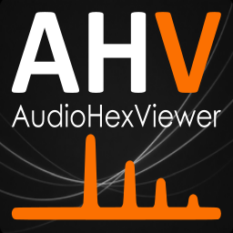
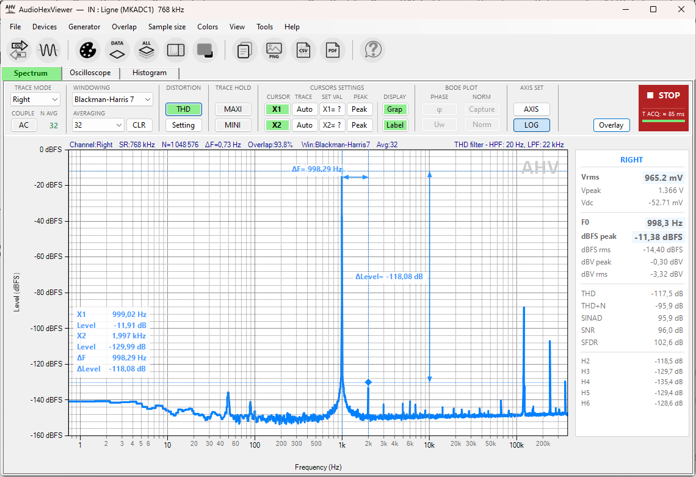
Spectrum view — 768 kHz capture, THD / THD+N / SINAD / SNR / SFDR and harmonic readout with dual cursors
What is it?
AudioHexViewer is a measurement tool for the DIY audio and electronics community. It captures audio in real time through WASAPI (including exclusive, bit-perfect mode) and turns a plain audio interface into a multi-instrument bench for characterizing ADCs, DACs, amplifiers and complete signal chains — with the kind of readouts usually reserved for dedicated lab gear.
Why it exists
The application was originally created to test hardware acquisition platforms under development — as a continuation of the OSVA audio project. What began as an instrument to validate converter boards grew into a general-purpose, high-resolution audio analyzer, released free and open source for anyone who wants a serious measurement bench without dedicated hardware. Everything runs locally: no cloud, no telemetry, no installer (a self-contained executable).
Key features & differentiators
Up to 768 kHz
WASAPI exclusive mode for bit-perfect capture at very high sample rates.
Professional metrics
THD, THD+N, SINAD, SNR, SFDR, IMD (19+20 kHz two-tone) and noise-floor measurement.
FFT up to 4 Mpts
High-resolution FFT with linear, exponential or coherent averaging.
Bode plot with reference
Gain and phase vs. frequency, with reference-response compensation — save and reload reference curves.
Built-in generator
11 signal types, a loopback mode to self-test the analyzer, and voltage calibration like the analyzer.
Amplitude histogram
Sample distribution with Gaussian overlay, σ markers, PDF normalization and DNL measurement.
Overlays
Record, save and compare reference traces across sessions.
Offline analysis
Load a WAV file and run the full analysis chain offline.
Level calibration
Map dBFS to real-world volts — for both the analyzer and the generator.
Live numeric readout
Sample values in decimal, floating-point, binary and hexadecimal, in real time.
Peak & cursors
Max-hold / min-hold detection, plus cursors with values shown in the graph and side panel.
Export & customize
CSV export of each graph's data, PDF export of the graphs, and fully customizable element colours.
Every control has a context-sensitive tooltip — enable context help from the toolbar to see inline guidance on any button, combo or field.
At a glance
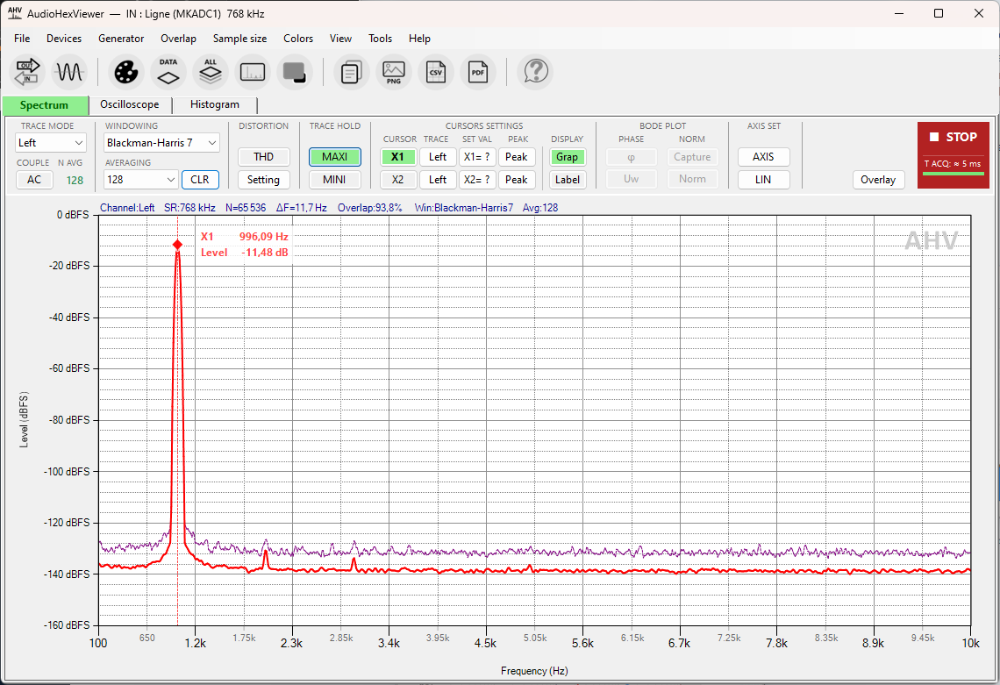
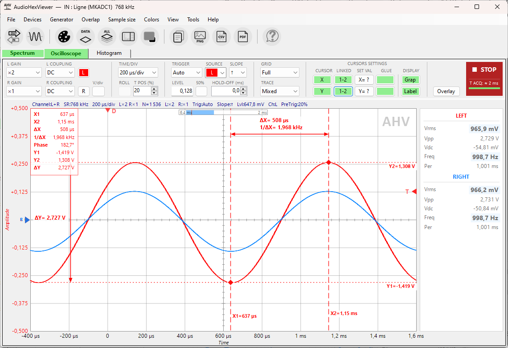
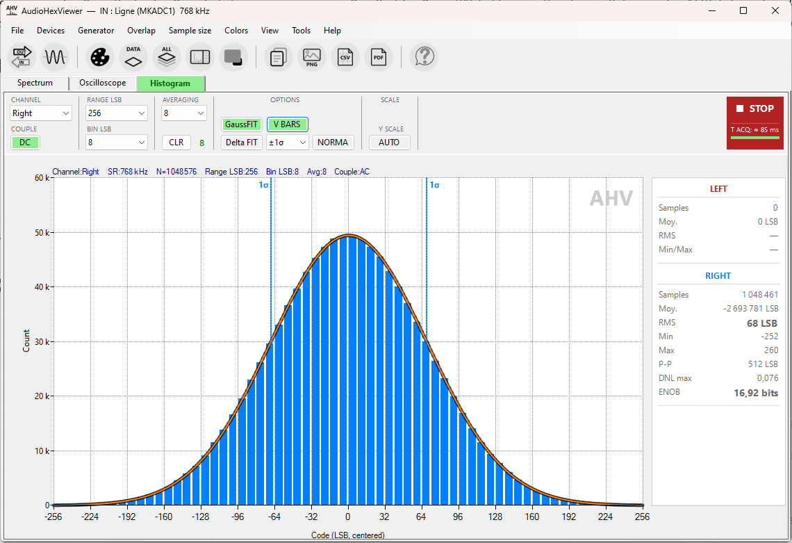
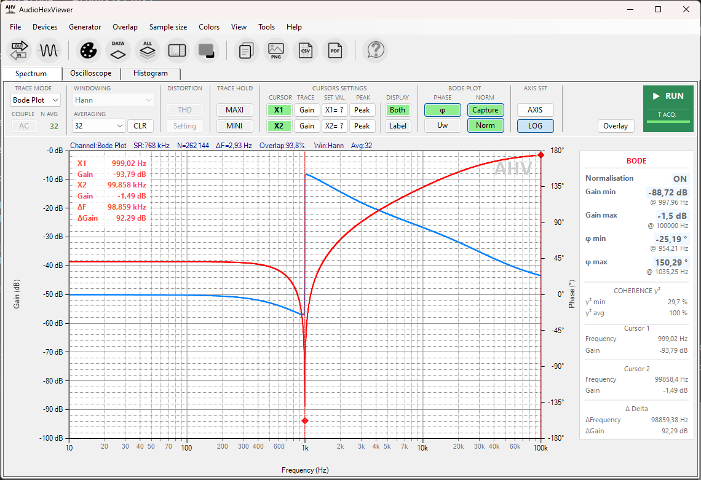
AudioHexViewer — User Documentation
AudioHexViewer is a professional audio analysis application for Windows. It captures audio in real time via WASAPI (including Exclusive Mode up to 768 kHz) and provides three complementary analysis views: a high-resolution FFT Spectrum Analyser, a Sample Histogram with ENOB measurement, and a Digital Oscilloscope. An integrated configurable Signal Generator allows testing without external hardware.
All session parameters are saved automatically on exit and restored on next launch.
System Requirements
| Operating System | Windows 10 / 11 (64-bit) |
| Runtime | .NET 10 |
| Audio Interface | Any WASAPI-compatible device |
| Display | 1280 × 800 minimum, 1920 × 1080 recommended |
Quick Start
The fastest path from launch to your first measurement:
- Select an input device. Open Audio Devices (toolbar or
Devicesmenu), pick your WASAPI capture device and a sample rate, then confirm. Enable exclusive mode for the highest rates. - Start acquisition. Click RUN (top-right). The active tab header turns green and the spectrum begins updating in real time.
- Feed a signal. No source handy? Open the Signal Generator and enable a 1 kHz sine (or use loopback mode to route the generator into the analyzer for a self-test).
- Read the measurements. The side panel shows Vrms/Vpeak, F0, dBFS peak, THD/THD+N/SINAD/SNR/SFDR and the harmonic table. Toggle the panel from the toolbar if hidden.
- Zoom and inspect. Drag a rectangle on the spectrum to zoom in; right-click to step back out (see Mouse Gestures & Zoom). Place cursors X1/X2 to read exact frequency and level differences.
Session parameters (device, windowing, colours, panel state…) are saved automatically on exit and restored on next launch.
Main Window
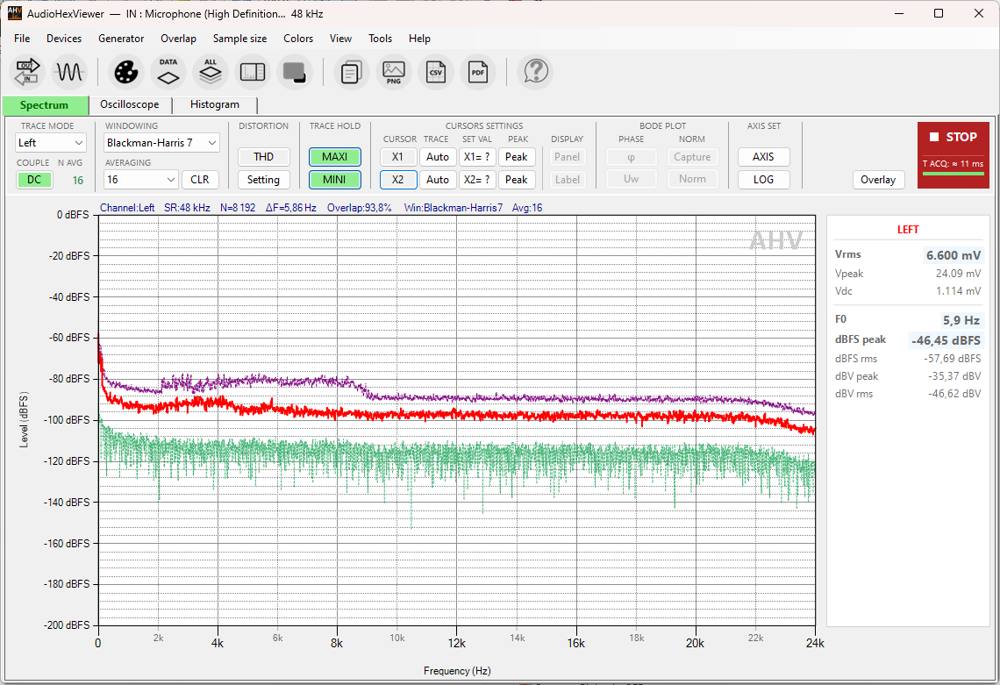
Main window — Spectrum tab running, measurement panel visible
The main window is divided into four areas:
| Title bar | Displays the application name and, when running, the active input device name and sample rate. |
| Menu bar | File · Devices · Generator · Overlap · Sample size · Colors · View · Tools · Help |
| Toolbar | 11 quick-access buttons (see below). |
| Tab bar | Three analysis tabs: Spectrum, Oscilloscope, Histogram. The active tab is highlighted in green when acquisition is running. |
Toolbar Buttons
| Button | Action |
|---|---|
| Audio Devices | Open the Audio Devices configuration dialog. |
| Generator | Open the Signal Generator window. Right-click for additional options. |
| Display Setup | Open the colour and style configuration dialog. |
| DataView | Open the DataView floating window (VU-meter + live sample value). |
| All Data Formats | Open the All Data Formats snapshot window. |
| Side Panel | Toggle the measurement panel on the right side of the graph (toggle button). |
| Always on Top | Keep the main window on top of all other windows (toggle button). |
| Copy to Clipboard | Copy the current graph to the system clipboard as an image. |
| Export PNG | Export the current graph as a PNG image file. |
| Export CSV | Export analysis data to a CSV file. |
| Export PDF | Export all analysis tabs to a multi-page PDF document. |
Per-tab Control Toolbar
Each analysis tab has its own control toolbar directly under the tab bar:
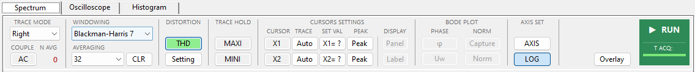
Spectrum tab — trace mode, windowing, averaging, distortion, trace hold, cursors, Bode plot and axis controls
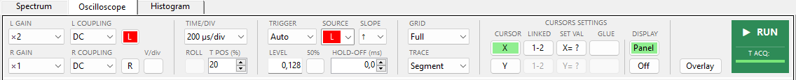
Oscilloscope tab — gains, coupling, timebase, trigger, grid and cursor controls
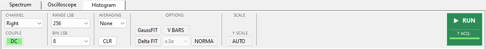
Histogram tab — channel, range/bin, averaging, display options (Gauss / Norm / N-σ) and Y scale
Offline Mode — Title Bar
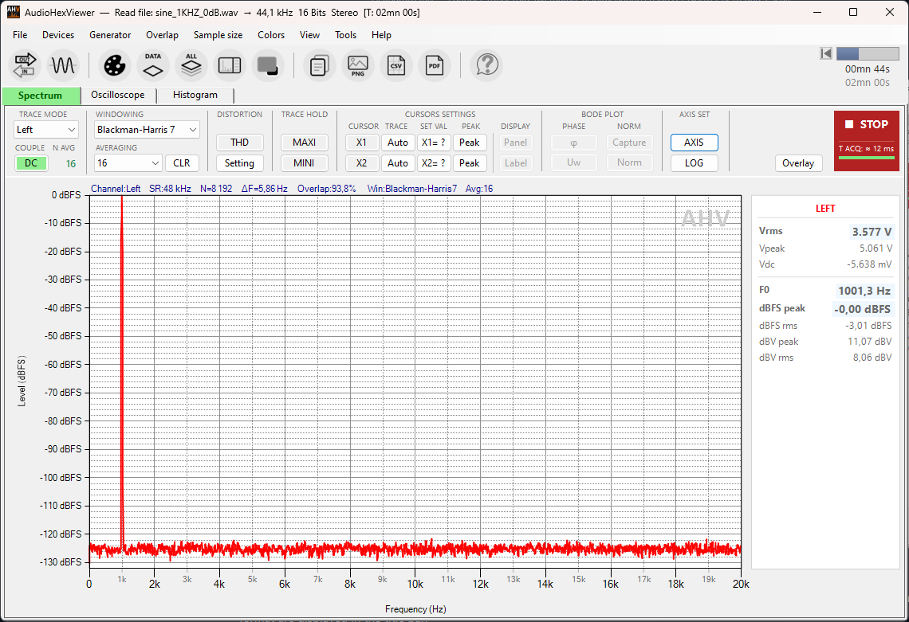
In offline mode, the title bar shows the source file name, sample rate, bit depth and playback progress
In OFFLINE mode, the top-right area of the window shows a progress bar and the elapsed / total playback time. The file name and format are displayed in the title bar.
Audio Devices
Open the Audio Devices dialog from the toolbar or the Devices menu.
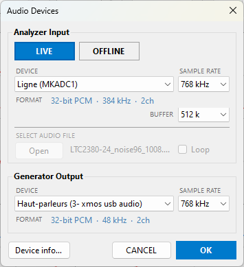
LIVE mode
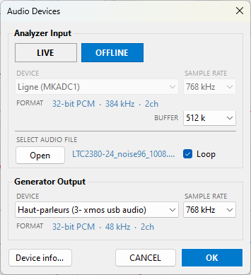
OFFLINE mode
Analyzer Input
Select LIVE or OFFLINE at the top of the section.
| Parameter | Description |
|---|---|
| DEVICE | Select the WASAPI input device (capture device). |
| SAMPLE RATE | Choose from: 44.1 · 48 · 88.2 · 96 · 176.4 · 192 · 352.8 · 384 · 705.6 · 768 kHz. The available rates depend on the device and whether Exclusive Mode is supported. |
| FORMAT | Displays the negotiated format: encoding, sample rate, bit depth, number of channels (read-only). |
| BUFFER | Ring buffer size in samples (16k · 32k · 64k · 128k · 256k · 512k). Larger buffers allow bigger FFT sizes but introduce more latency. |
OFFLINE mode
Click Open to select a WAV or FLAC file. The selected file name is displayed next to the button. Enable Loop to repeat playback continuously.
Generator Output
| Parameter | Description |
|---|---|
| DEVICE | Select the WASAPI output device used by the Signal Generator. |
| SAMPLE RATE | Output sample rate for the generator (independent from the analyser input rate). |
| FORMAT | Negotiated output format (read-only). |
Click Device info… to open the Device Info window showing detailed WASAPI capabilities.
Device Info
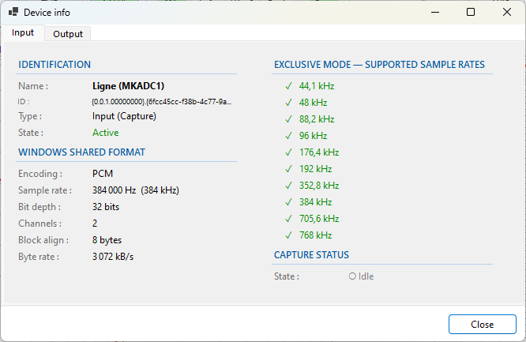
Device Info — showing supported Exclusive Mode sample rates
The Device Info window (accessed from the Audio Devices dialog) shows:
| IDENTIFICATION | Device name, system ID, type (Input/Output), state. |
| WINDOWS SHARED FORMAT | The format used in WASAPI Shared Mode: encoding, sample rate, bit depth, channels, block align, byte rate. |
| EXCLUSIVE MODE — SUPPORTED SAMPLE RATES | All sample rates the device supports in WASAPI Exclusive Mode (checked = supported). |
| CAPTURE STATUS | Current acquisition state (Idle / Running). |
Use the Input and Output tabs to switch between the two devices.
Level Calibration
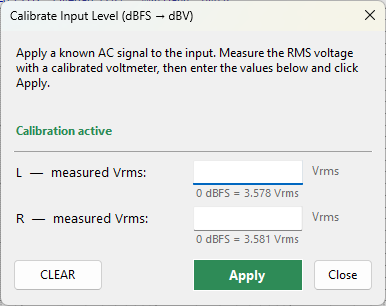
Calibrate Input Level dialog (dBFS → dBV)
The calibration dialog lets you establish a correspondence between the digital full-scale level (0 dBFS) and a real voltage in Vrms. This allows measurements in dBV, Vrms, Vpeak and Vdc throughout the application.
Procedure
- Apply a stable, known AC signal to the input (e.g. a 1 kHz sine from a calibrated source).
- Measure the actual RMS voltage at the input with a calibrated voltmeter.
- Enter the measured Vrms value for the Left channel (and Right if different).
- Click Apply. The calculated 0 dBFS equivalent is shown below each field.
Click CLEAR to remove the calibration and revert to uncalibrated mode.
Spectrum Analyser
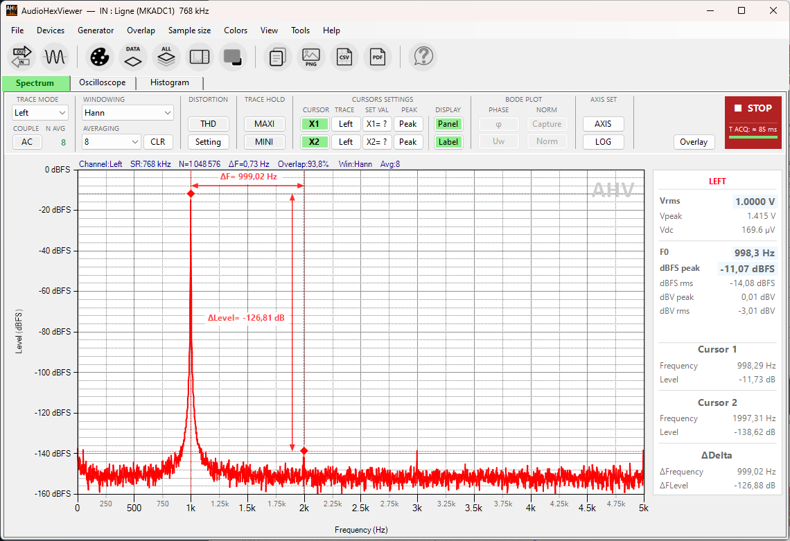
Spectrum tab running at 768 kHz with 1 048 576-point FFT, averaging 8
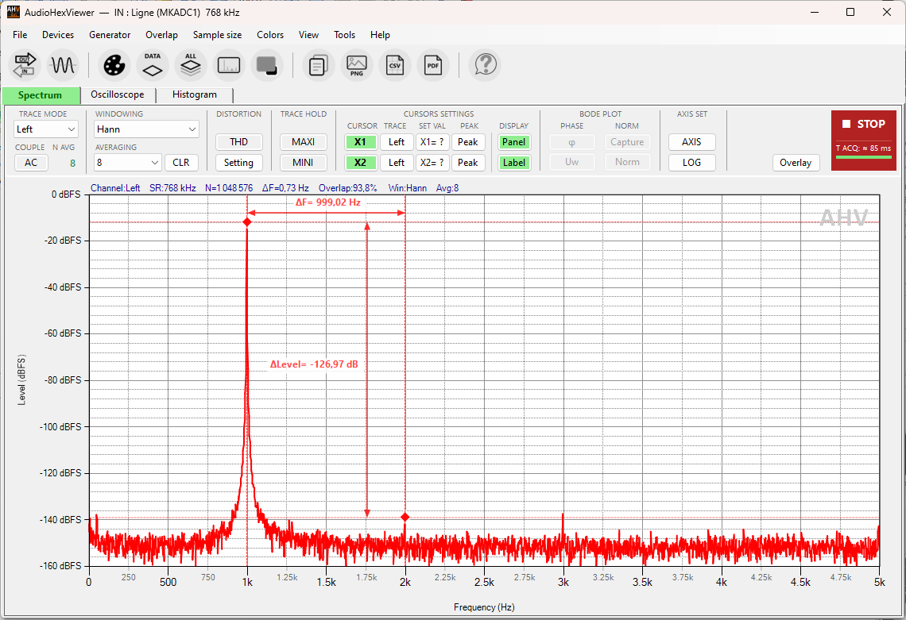
Spectrum tab with the side measurement panel hidden — maximum graph width
The Spectrum Analyser displays the FFT magnitude spectrum of the audio input. The X axis is frequency (Hz, logarithmic by default), the Y axis is level in dBFS (or dBV / dBGain when calibrated).
The status bar below the control panel shows the current analysis parameters:
Channel · SR · N · ΔF · Overlap% · Window · Avg
Trace Mode
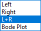
Trace mode selector
| Mode | Description |
|---|---|
| Left | Display the FFT of the left channel only. |
| Right | Display the FFT of the right channel only. |
| L+R | Overlay both channels on the same graph. |
| Bode Plot | Display the transfer function between Right (stimulus) and Left (response). See Bode Plot section. |
Windowing
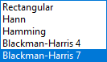
Window function selector
| Window | Main-lobe width | Side-lobe level | Best for |
|---|---|---|---|
| Rectangular | Narrowest | High (−13 dB) | Transient analysis, coherent capture |
| Hann | Medium | −31 dB | General-purpose, good frequency resolution |
| Hamming | Medium | −41 dB | Similar to Hann, slightly better side-lobe rejection |
| Blackman-Harris 4 | Wide | −92 dB | High dynamic range measurements |
| Blackman-Harris 7 | Widest | −180 dB | Ultra-high dynamic range, THD, SFDR |
Sample Size
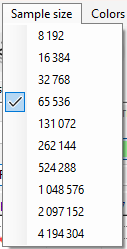
Sample size selection via the Sample size menu
The FFT size (number of samples per analysis frame) is set from the Sample size menu in the menu bar. Available values:
8 192 · 16 384 · 32 768 · 65 536 · 131 072 · 262 144 · 524 288 · 1 048 576 · 2 097 152 · 4 194 304
The frequency resolution ΔF = SR / N. For example, at 768 kHz with N = 1 048 576: ΔF = 0.73 Hz.
Overlap
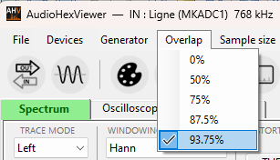
Overlap menu (accessible via the Overlap menu in the menu bar)
Overlap determines how much consecutive FFT frames share. Higher overlap gives a smoother spectrum update and better time resolution. Available values:
Averaging
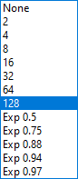
Averaging options
| Mode | Description |
|---|---|
| None | No averaging. Each FFT frame is displayed immediately. |
| 2 … 128 | Linear averaging: the spectrum is the arithmetic mean of the last N frames. The N AVG counter in the control bar shows how many frames have been accumulated. Click CLR to reset. |
| Exp 0.5 … Exp 0.97 | Exponential (leaky) averaging: each new frame is blended with the previous result using the given α coefficient. Higher α = slower decay, more smoothing. Reacts continuously to signal changes. |
Trace Hold
The TRACE HOLD section has two independent hold traces, each with its own colour (configured in Display Setup).
| Button | Description |
|---|---|
| MAXI | Maximum hold: retains the highest level ever seen at each frequency bin. Useful for finding peak emissions or characterising worst-case noise. |
| MINI | Minimum hold: retains the lowest level ever seen at each frequency bin. Useful for noise floor characterisation. |
Click a hold button to activate it (button lights up). Click again to deactivate. Right-clicking on a hold button resets the hold trace.
Hold trace colours and thickness are configured in Display Setup under the TRACES HOLD section (Min Left, Max Left, Min Right, Max Right).
THD / Distortion
The DISTORTION section provides harmonic distortion (THD) and spurious-free dynamic range (SFDR) measurements.
| Control | Description |
|---|---|
| THD button | Toggle the THD / SFDR readout overlay on the graph. The fundamental and harmonics are marked with vertical lines; THD and SFDR values appear on the graph. |
| Setting | Open the THD Settings dialog. |
THD Settings Dialog
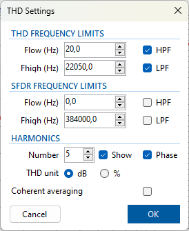
THD Settings dialog
| Parameter | Description |
|---|---|
| THD FREQUENCY LIMITS — Flow / Fhigh | Frequency window for THD harmonic search. HPF / LPF checkboxes enable high-pass and low-pass filtering of the search range. |
| SFDR FREQUENCY LIMITS — Flow / Fhigh | Frequency window for SFDR spur search. HPF / LPF checkboxes filter the range. |
| HARMONICS — Number | Number of harmonics to include in the THD calculation (up to the configured limit). |
| Show | Display harmonic markers on the graph. |
| Phase | Display harmonic phase information. |
| THD unit | Express THD result in dB or %. |
| Coherent averaging | Enable coherent averaging mode for THD. The analyser locks the FFT frame to the fundamental period and averages with phase correction, greatly improving harmonic measurement accuracy. |
Cursors
The Spectrum tab has two independent frequency cursors: X1 and X2. Each cursor is a vertical line on the graph.
| Control | Description |
|---|---|
| X1 / X2 buttons | Activate the corresponding cursor. Click and drag the vertical line on the graph to position it. Cursor is highlighted when active. |
| TRACE dropdown | Select which trace the cursor snaps to (Left, Right, or Auto). |
| SET VAL (X1= ? / X2= ?) | Open a dialog to enter the cursor frequency numerically. 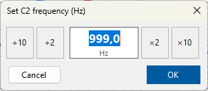 Fine-adjustment buttons (÷10, ÷2, ×2, ×10) are available. |
| PEAK buttons | Snap the cursor to the nearest spectral peak. Right-clicking opens the peak navigation menu (see below). |
Peak Navigation Menu
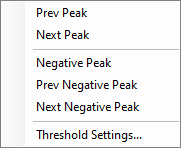
| Prev Peak | Move cursor to the previous peak to the left. |
| Next Peak | Move cursor to the next peak to the right. |
| Negative Peak | Snap to the deepest trough. |
| Prev / Next Negative Peak | Navigate between troughs. |
| Threshold Settings… | Set the noise-to-peak threshold (dB) for peak detection. |
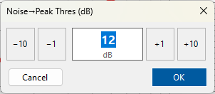
Peak detection threshold
Cursor Display Modes
The DISPLAY button cycles through four cursor display states:
| State | Description |
|---|---|
| All | Cursor values are shown both in the side measurement panel and in a moveable floating box on the graph. |
| Panel | Cursor values are shown in the side measurement panel only. |
| Graph | Cursor values are shown in the floating box on the graph only. |
| Off | Cursor values are hidden. |
The Label button (below DISPLAY) toggles ΔFrequency and ΔLevel arrows between the two cursors, displayed directly on the graph. These annotation elements are draggable.
Bode Plot
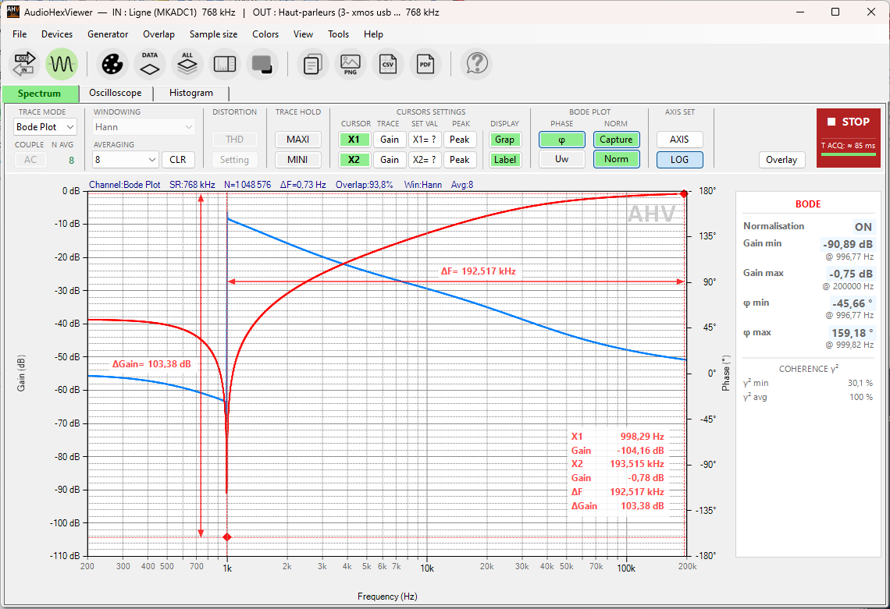
Bode Plot mode — transfer function with dual Y axis (Gain dB / Phase °)
Bode Plot mode measures the transfer function between a stimulus and a response. Typical use: play a sweep or multi-harmonic reference signal through the Generator Output device, connect the DUT (Device Under Test) between output and input, then enable Bode Plot mode.
- Left axis (red trace): Gain in dB
- Right axis (blue trace): Phase in degrees
Bode Plot Controls
| Control | Description |
|---|---|
| φ (Phase button) | Toggle the phase trace on/off. |
| Uw (Phase Unwrap) | Display the unwrapped phase — removes the ±180° discontinuities and shows the true continuous phase curve when phase rotation exceeds 180°. |
| Capture | Record the current spectrum as the normalisation reference (the "baseline without DUT"). Once captured, all subsequent measurements are normalised to this reference curve. |
| Norm | Toggle normalisation on/off. When ON, the display shows the ratio (DUT − reference), giving a true gain/phase plot of the DUT alone. |
Reference Management (right-click on Capture)
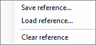
| Save reference… | Save the current normalisation curve to a .spec.json file in Documents\AudioHexViewer\BodeRef\. |
| Load reference… | Load a previously saved reference curve from file. |
| Clear reference | Remove the normalisation reference. |
Bode Plot Measurement Panel
| Normalisation | ON / OFF indicator |
| Gain min / max | Minimum and maximum gain values found across the frequency range, with their frequency. |
| φ min / max | Minimum and maximum phase values, with their frequency. |
| COHERENCE γ² | Coherence function — a value of 100% indicates perfect linear correlation between stimulus and response (no noise or nonlinearities). Lower values indicate measurement uncertainty. |
Axis Parameters
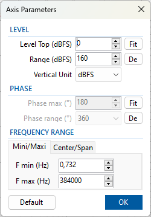
Fmin / Fmax mode
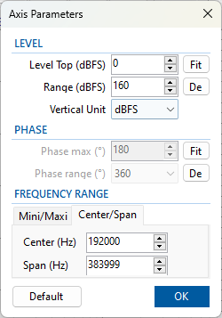
Center / Span mode
The Axis Parameters dialog is opened with the AXIS button in the control bar.
LEVEL
| Level Top (dBFS) | The Y axis maximum (top of scale). Default: 0. |
| Range (dBFS) | Total vertical span. Default: 160 dB (giving a scale of 0 to −160 dBFS). |
| Fit button | Automatically sets Top and Range to fit the current spectrum data. |
| De(fault) button | Reset to default values (0 dBFS top, 160 dB range). |
| Vertical Unit | Select the Y axis unit: dBFS (relative to digital full scale) · dBV (absolute, requires level calibration) · dB Gain (for Bode Plot mode). |
PHASE (Bode Plot mode only)
| Phase max (°) | Top of the phase axis. Default: 180°. |
| Phase range (°) | Total phase span. Default: 360°. |
FREQUENCY RANGE
Toggle between Mini/Maxi (set Fmin and Fmax directly) and Center/Span modes using the tab buttons.
| F min / F max | Absolute lower and upper frequency bounds for the X axis. |
| Center / Span | Center frequency and total span (alternative entry method). |
| Default button | Reset all axis parameters to their default values. |
LOG / LIN Button
Located in the AXIS SET section of the control bar. Switches the X axis between logarithmic (default, best for audio) and linear frequency scale.
Overlays
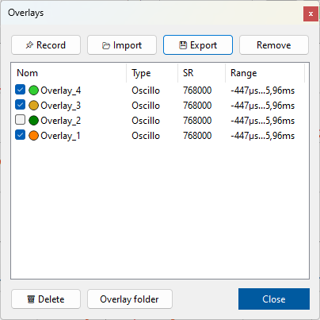
Overlays management dialog
Overlays allow up to 8 stored reference curves to be displayed simultaneously on the Spectrum or Oscilloscope graph. They are stored as .spec.json (Spectrum) or .scop.json (Oscilloscope) files.
| Control | Description |
|---|---|
| Record | Capture the current live trace and add it as a new overlay. |
| Import | Load an overlay from a .spec.json or .scop.json file. |
| Export | Save the selected overlay(s) to file. |
| Remove | Remove the selected overlay from the list (does not delete the file). |
| Overlay list | Each row shows: enable checkbox · colour indicator · Name · Type · SR · Range. Click a row to select it. |
| Delete | Permanently delete the selected overlay file. |
| Overlay folder | Open the overlay storage folder in Windows Explorer. |
Overlay colours are configured in Display Setup. The Overlay button in the main control bar opens this dialog.
Measurement Panel (Spectrum)
The side panel (toggle with the Side Panel toolbar button) shows real-time measurements for each channel.
| Value | Description |
|---|---|
| Vrms | RMS voltage (Vrms or µV). Requires level calibration for absolute values. |
| Vpeak | Peak voltage. |
| Vdc | DC offset voltage. |
| F0 | Fundamental frequency (frequency of the highest spectral peak). |
| dBFS peak | Level of the highest spectral peak in dBFS. |
| dBFS rms | Total RMS level of the signal in dBFS. |
| dBV peak | Peak level in dBV (requires calibration). |
| dBV rms | RMS level in dBV (requires calibration). |
| Cursor 1 / Cursor 2 | Frequency and level at each cursor position. |
| ΔDelta | Difference between Cursor 1 and Cursor 2: ΔFrequency and ΔLevel. |
Mouse Gestures & Zoom
The spectrum graph supports direct mouse interaction to zoom and place cursors — no menu needed.
| Gesture | Action |
|---|---|
| Left-drag | Box zoom. Drag a rectangle over a region of interest; both axes zoom to the selection, with the bounds snapped outward to the grid lines. |
| Right-click | Zoom out one step. Reverts to the previous zoom level (multi-level history). Does nothing when fully zoomed out. |
| Double-click (left) | Cursor action (snap the nearest cursor to the peak under the pointer). |
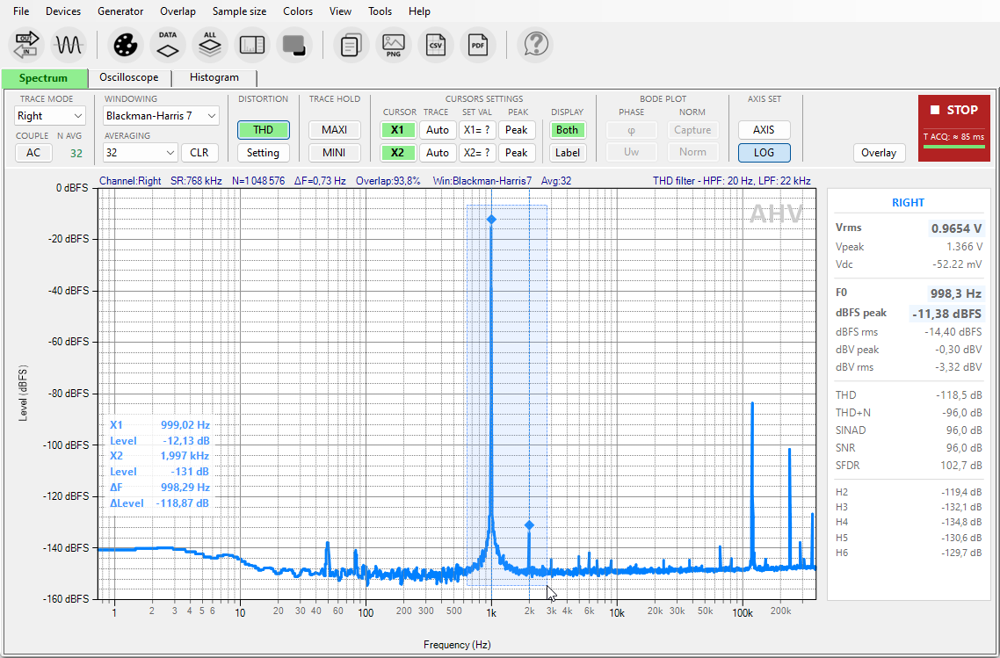
Left-drag: a selection rectangle is drawn over the region to magnify
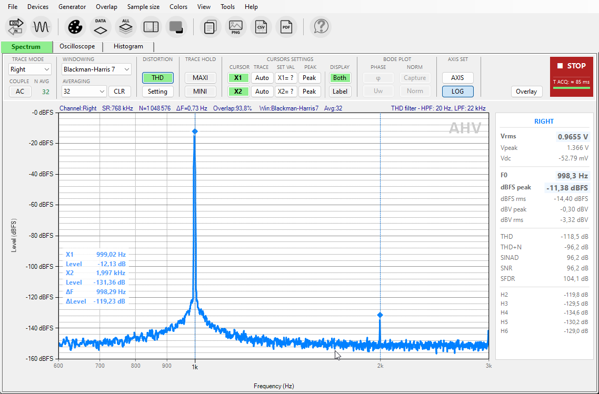
After release: both axes zoom to the selection, snapped to the grid
Right-click repeatedly to walk back through the zoom history one level at a time. The axis bounds always land on round grid values, in both linear and logarithmic frequency scales.
Histogram
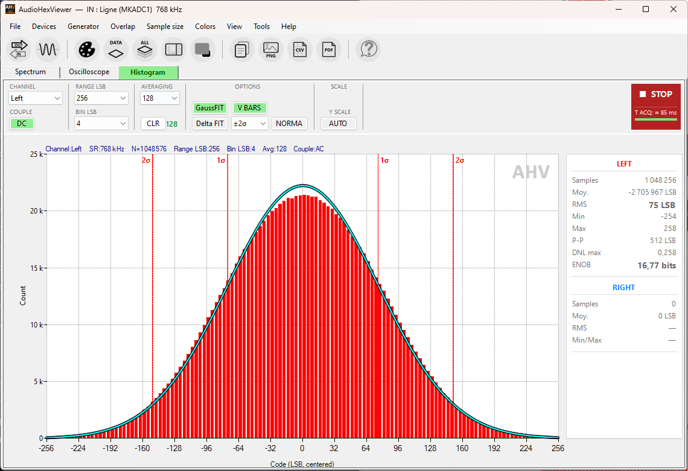
Histogram tab — Left channel, 256 LSB range, Bin 4 LSB, Averaging 128, GaussFIT + V BARS active
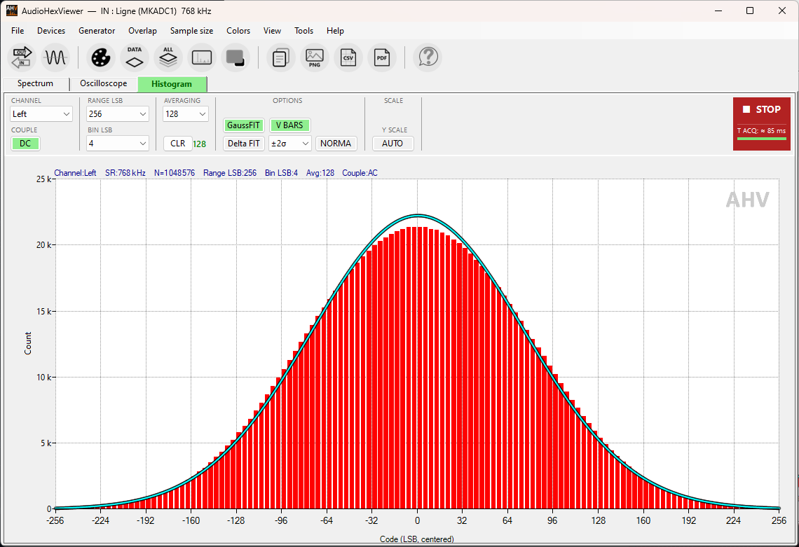
Histogram with the side panel hidden
The Histogram displays the statistical distribution of audio sample values. It is particularly useful for evaluating ADC quality: a purely random (noise) signal produces a Gaussian distribution, and deviations from this ideal shape reveal non-linearities.
Controls
| Control | Options | Description |
|---|---|---|
| CHANNEL | Left · Right · Both | Select which channel(s) to analyse. "Both" overlays Left (red) and Right (blue). |
| RANGE LSB | 1 → 8 388 608 | The total amplitude range displayed on the X axis, in LSB units. Set to match the expected signal amplitude. 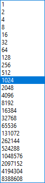 |
| BIN LSB | 1 → 65 536 | The width of each histogram bin in LSB. Smaller bins give finer resolution but require more samples for statistical significance. 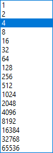 |
| AVERAGING | None · 2 · 4 · 8 · 16 · 32 · 64 · 128 | Number of frames to average. Higher averaging smooths the histogram bars and improves the Gaussian fit accuracy. |
| CLR | — | Clear the averaging accumulator and restart. |
| COUPLE | DC · AC | DC: include the DC offset in the histogram range. AC: subtract the mean (centre the distribution at zero). |
Display Modes
| Button | Description |
|---|---|
| GaussFIT | Overlay a fitted Gaussian curve on the histogram. The curve is drawn in a contrasting colour with a soft halo for visibility. Parameters (µ, σ) are fitted to the actual distribution. |
| V BARS | Display σ marker lines at ±1σ, ±2σ or ±3σ (selected with the adjacent dropdown). These vertical bars show the standard deviation boundaries. |
| Delta FIT | Display the difference between the actual histogram and the fitted Gaussian, revealing systematic deviations (DNL, missing codes, etc.). |
| NORMA | Normalise the Y axis to probability density (PDF). Converts raw counts to a probability scale, making comparison between different acquisition lengths meaningful. |
| Y SCALE — AUTO | Automatically adjust the Y axis scale to fit the data. |
The ±σ dropdown (adjacent to V BARS) selects: ±1σ · ±2σ · ±3σ
Statistics Panel (Histogram)
| Value | Description |
|---|---|
| Samples | Total number of samples accumulated in the current histogram. |
| Moy. (Mean) | Mean value of the distribution in LSB. |
| RMS | RMS value in LSB. |
| Min / Max | Minimum and maximum sample values observed. |
| P-P | Peak-to-peak range (Max − Min) in LSB. |
| DNL max | Differential Non-Linearity — maximum deviation of any bin from the ideal 1 LSB width. Ideal = 0; values > 0.5 indicate missing codes. |
| ENOB | Effective Number Of Bits — derived from the RMS noise level relative to full scale. Provides a single figure of merit for the ADC quality. |
Oscilloscope
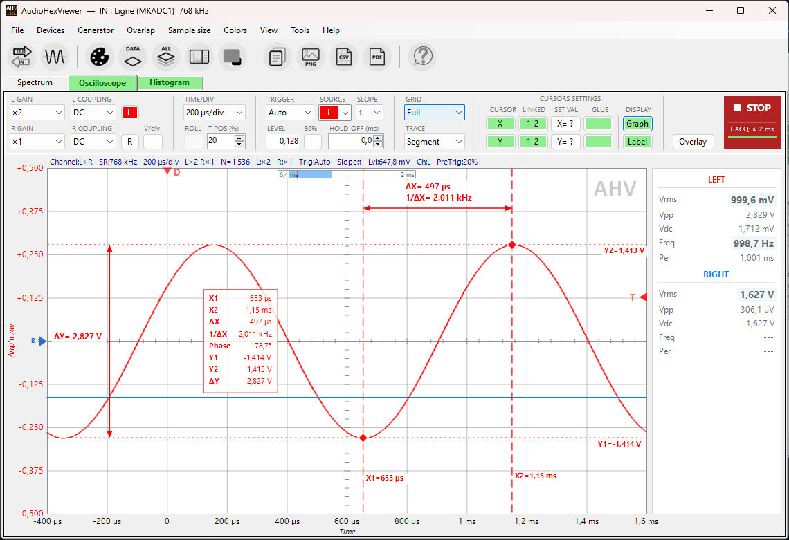
Oscilloscope tab — Single trigger, cursors X and Y active, measurement panel visible
The Oscilloscope displays the time-domain waveform of the audio signal. The display grid has 10 horizontal divisions × 8 vertical divisions. Both channels (Left in red, Right in blue) are shown simultaneously.
The status bar shows: Channel · SR · Time/div · L gain · R gain · N · Trigger mode · Slope · Level · Source · PreTrig%
Screen Markers
| D | Trigger position indicator — the point in time where the trigger event is located. Displayed at the top of the graph. Draggable to adjust the pre-trigger position. |
| B | Baseline reference — the zero-amplitude line for the active channel. Displayed on the left Y axis. Draggable to adjust the vertical offset. |
| T | Trigger level — the amplitude threshold for trigger detection. Displayed on the right side. Draggable to adjust the trigger level. |
Vertical Scale
The oscilloscope has two vertical scale modes, selected with the V/div button:
V/div Mode (calibrated — V/div button active, lit green)
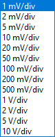
V/div options (calibrated mode)
Each division represents a fixed voltage. Available settings:
1 mV/div · 2 mV/div · 5 mV/div · 10 mV/div · 20 mV/div · 50 mV/div · 100 mV/div · 200 mV/div · 500 mV/div · 1 V/div · 2 V/div · 5 V/div · 10 V/div
Gain Mode (uncalibrated — V/div button inactive)
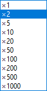
Gain multiplier options (uncalibrated mode)
The vertical scale is a digital gain multiplier applied to the signal. Available multipliers: ×1 · ×2 · ×5 · ×10 · ×20 · ×50 · ×100 · ×200 · ×500 · ×1000
Coupling
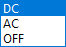
| DC | Full signal including DC component. |
| AC | High-pass filtered — DC component removed. |
| OFF | Channel disabled — trace hidden. |
L and R coupling are set independently via the L COUPLING and R COUPLING dropdowns.
Timebase
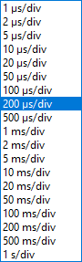
TIME/DIV options (19 steps)
The timebase sets the time per horizontal division. Available values (19 steps):
1 µs · 2 µs · 5 µs · 10 µs · 20 µs · 50 µs · 100 µs · 200 µs · 500 µs
1 ms · 2 ms · 5 ms · 10 ms · 20 ms · 50 ms · 100 ms · 200 ms · 500 ms · 1 s
Horizontal Zoom (Stopped Mode)
When acquisition is stopped, hold Ctrl and scroll the mouse wheel to zoom in/out on the time axis. This refines the view without changing the capture parameters.
Pre-Trigger Position (T POS %)
Sets what fraction of the acquisition window is displayed before the trigger point. At 20%, 20% of the screen shows the signal before the trigger event. Drag the D marker on the graph to adjust visually.
Roll Mode
The ROLL button activates continuous scrolling mode, available from 10 ms/div. In Roll mode there is no trigger; the waveform scrolls continuously from right to left, like a chart recorder. Useful for slow signals.
Hold-Off
The HOLD-OFF (ms) NUD sets the minimum time between two consecutive triggers, preventing re-triggering on noise or complex waveforms.
Trigger
| Control | Options | Description |
|---|---|---|
| TRIGGER mode | Auto · Normal · Single |
Auto: triggers continuously; if no trigger event occurs, the display updates anyway. Normal: waits for a trigger event; display freezes if none occurs (status shows WAIT). Single: captures one frame on the next trigger event, then stops. |
| SOURCE | L · R | Channel used for trigger detection. |
| SLOPE | ↑ · ↓ | Rising edge or falling edge trigger. |
| LEVEL | Numeric NUD | Trigger threshold in the current unit (normalised or Volts). Drag the T marker on the graph to adjust visually. Use ↑/↓ arrow keys when the NUD is focused. |
| 50% | Button | Automatically set the trigger level to 50% of the measured peak-to-peak amplitude. |
The acquisition status indicator (top right) shows:
| TRIG'D | Trigger event detected, display updated. |
| WAIT | Waiting for trigger event (Normal or Single mode). |
| STOPPED | Acquisition stopped. |
Cursors
The Oscilloscope has independent X (time) and Y (amplitude) cursor pairs.
X Cursors
| Control | Description |
|---|---|
| X button | Toggle X cursors on/off. When active, two vertical dashed lines appear on the graph. |
| LINKED 1-2 | Move both X cursors simultaneously, maintaining their relative spacing. |
| SET VAL (X=?) | Enter the cursor time position numerically. |
| GLUE X | When active: the cursors are "glued" to a specific sample index and follow the waveform as it scrolls. When inactive: the cursors remain at a fixed pixel position on screen. |
Y Cursors
| Y button | Toggle Y cursors on/off. Two horizontal dashed lines appear. |
| LINKED 1-2 | Move both Y cursors simultaneously. |
| SET VAL (Y=?) | Enter the cursor amplitude numerically. |
| GLUE Y | When active: each Y cursor automatically tracks the amplitude of the waveform at the corresponding X cursor position. When inactive: Y cursors float freely. |
Cursor Display Modes
The DISPLAY button (labelled Grap / Label) cycles through the same 4 states as in the Spectrum tab:
| All | Values shown in side panel + floating box on graph. |
| Panel | Values shown in side panel only. |
| Graph (Grap) | Values shown in floating box on graph only. |
| Off | Values hidden. |
The Label button toggles the ΔX / ΔY annotation arrows between the cursors (draggable).
Cursor Readout
The cursor readout box (bottom right of graph, or in the side panel) shows:
| X1 / X2 | Time position of each X cursor. |
| ΔX | Time difference between X1 and X2. |
| 1/ΔX | Frequency corresponding to ΔX (= 1 / ΔX). |
| Phase | Phase difference between the two X cursor positions (degrees). |
| Y1 / Y2 | Amplitude at each Y cursor position. |
| ΔY | Amplitude difference between Y1 and Y2. |
Display Options
Grid Mode
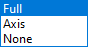
| Full | Complete grid with all horizontal and vertical lines. |
| Axis | Centre lines only (X and Y axes). |
| None | No grid. |
Trace Mode
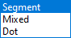
| Segment | Connect samples with line segments (default). Smooth, continuous appearance. |
| Mixed | Segments for connected regions, dots otherwise. |
| Dot | Display each sample as an individual dot. |
Overlays (Oscilloscope)
The Oscilloscope Overlays system works identically to the Spectrum Overlays (see Spectrum — Overlays), using .scop.json files. Click the Overlay button in the control bar to open the Overlays dialog.
Measurement Panel (Oscilloscope)
| Value | Description |
|---|---|
| Vrms | RMS amplitude of the displayed waveform. |
| Vpp | Peak-to-peak amplitude. |
| Vdc | DC offset. |
| Freq | Estimated fundamental frequency (from zero-crossing detection). |
| Per | Estimated period. |
Values are shown separately for Left and Right channels. A channel set to OFF shows no values.
Signal Generator
The Signal Generator produces digital test signals that are sent to the Generator Output device configured in the Audio Devices dialog. Open it from the toolbar Generator button or the Generator menu.
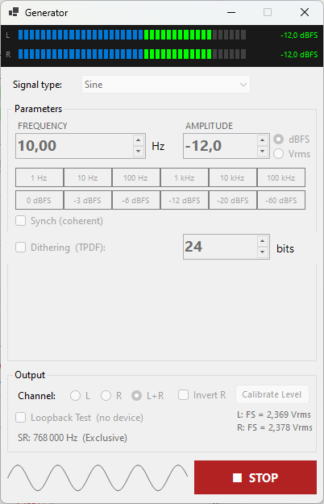
Generator running — Sine signal, −12 dBFS, 10 Hz
Common Controls (all signal types)
| Control | Description |
|---|---|
| VU meter (top) | LED-bar level meter showing the generator output level for L and R channels, with dBFS readout. |
| Signal type | Dropdown to select the waveform type (see sections below). |
| Channel | Select which output channel(s): L · R · L+R. Invert R inverts the right channel (useful for balanced connections). |
| Loopback Test | When enabled, the generator output is routed directly to the analyser input in software — no physical connection needed. Useful for checking generator waveforms. |
| Calibrate Level | Opens the Level Calibration dialog (see Level Calibration). |
| SR display | Shows the current output sample rate. "(Exclusive)" indicates WASAPI Exclusive Mode. |
| FS calibration values | Shows the current full-scale equivalent in Vrms for L and R, based on the calibration. |
| RUN / STOP | Start or stop the generator. |
Sine
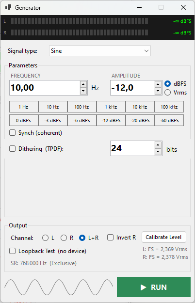
| Parameter | Description |
|---|---|
| FREQUENCY (Hz) | Output frequency. Quick-select buttons: 1 Hz · 10 Hz · 100 Hz · 1 kHz · 10 kHz · 100 kHz |
| AMPLITUDE | Output level in dBFS or Vrms (toggle the radio button). Quick-select: 0 · −3 · −6 · −12 · −20 · −60 dBFS |
| Synch (coherent) | Locks the sine frequency to an integer number of FFT bins, ensuring the signal falls exactly on a bin (eliminates spectral leakage). Recommended for THD measurements. |
| Dithering (TPDF) | Adds triangular probability density function (TPDF) dither noise before quantisation. The bit depth of the dither can be set with the adjacent NUD. Improves the statistical properties of the ADC output at low signal levels. |
Square / Triangle / Sawtooth
Square
Ideal 50 % duty-cycle square wave. Rich in odd harmonics — useful for loudspeaker and amplifier testing.
Triangle
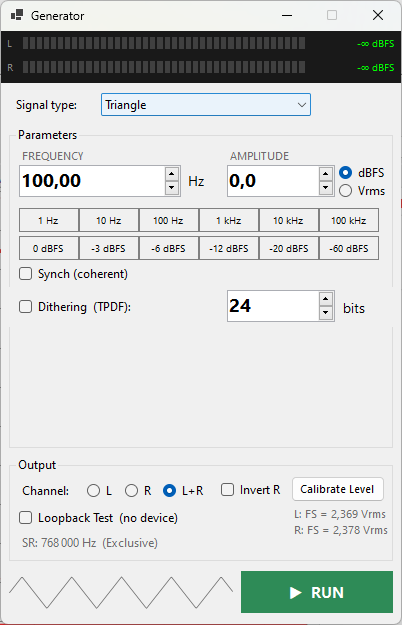
Triangle wave. Contains only odd harmonics with −12 dB/octave slope.
Sawtooth
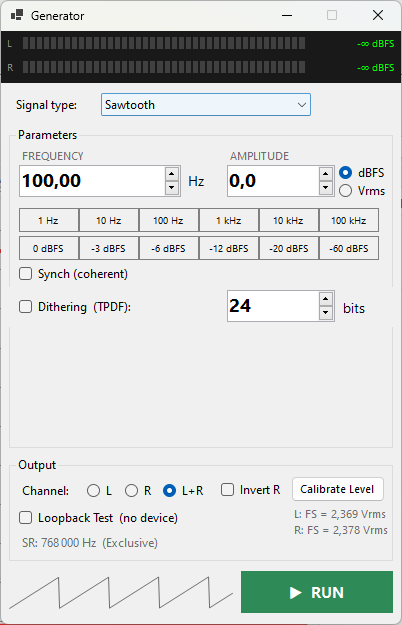
Sawtooth wave. Contains all harmonics (odd and even) with −6 dB/octave slope.
These three waveforms share the same parameters: FREQUENCY and AMPLITUDE (with the same quick-select buttons as Sine).
White Noise & Pink Noise
White Noise (Gaussian)
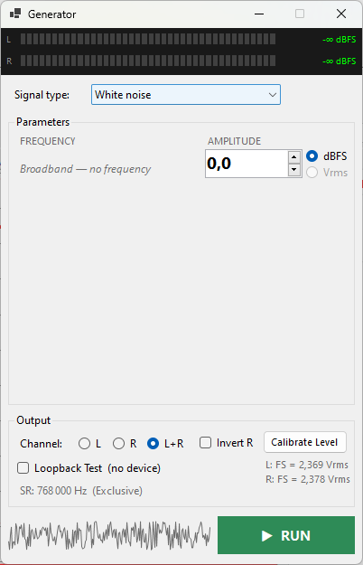
Gaussian white noise with flat spectral density. Parameters: AMPLITUDE only.
Pink Noise
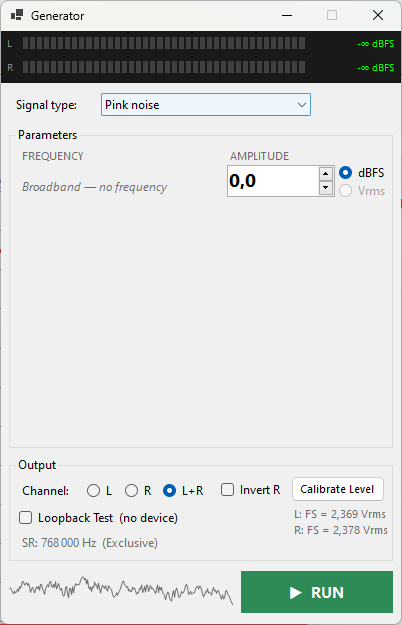
Pink noise (1/f spectrum, −3 dB/octave slope). Perceptually more natural for audio testing. Parameters: AMPLITUDE only.
Sweep
| Parameter | Description |
|---|---|
| START (Hz) | Starting frequency of the sweep. |
| END (Hz) | Ending frequency of the sweep. |
| AMPLITUDE | Output level (dBFS or Vrms). |
| DURATION (s) | Total sweep duration in seconds. |
| Logarithmic | When checked, the frequency changes logarithmically (equal time per octave). When unchecked, linear sweep. Logarithmic is recommended for audio measurements. |
| Loop | Repeat the sweep continuously after it completes. |
Tone Burst
Generates a repeating pattern of sine bursts followed by silence. Useful for evaluating transient response and ringing.
| Parameter | Description |
|---|---|
| FREQ (BURST) (Hz) | Frequency of the sine burst. |
| AMPLITUDE | Output level. |
| TON — Periods / ms | Duration of the ON phase (active burst), expressed either in cycles of the burst frequency or in milliseconds. |
| TOFF — Periods / ms | Duration of the OFF phase (silence), in cycles or milliseconds. |
| Window | Windowing applied to the burst edges to reduce the transient click: Rectangular (hard on/off) or a smooth window. |
| Loop | Repeat the burst pattern continuously. |
Two-Tone (IMD)
Generates the sum of two sine waves for Intermodulation Distortion (IMD) measurements.
| Parameter | Description |
|---|---|
| FREQUENCY F1 | Frequency of the first tone. |
| AMPLITUDE F1 | Level of the first tone (dBFS or Vrms). |
| Synch (coherent) | Lock both frequencies to FFT bins for leakage-free measurement. |
| IMD preset | Quick-select standard IMD test pairs (e.g. SMPTE 60 Hz + 7 kHz, IEC 19 kHz + 20 kHz, etc.). Manual allows free entry of both frequencies. |
| FREQUENCY F2 | Frequency of the second tone. |
| AMPLITUDE F2 | Level of the second tone. |
DataView
DataView window — Hex format
DataView is a floating window (opened from the toolbar) that shows the current live sample values in real time.
| VU meter (top) | LED-bar level meter for L and R with dBFS readout. |
| dBFS level | Current level in dBFS for each channel, large display. |
| Sample value display | The current sample value shown in the selected format, large and easy to read. |
| Format selector | Dropdown to choose the display format: |
| Decimal (24b) | Signed decimal integer, 24-bit range (−8 388 608 to +8 388 607). |
| Hex (24 bits) | Hexadecimal representation (e.g. 0x171E01). |
| Binary (24b) | Binary MSB or LSB representation. |
| Float | Normalised floating-point value (−1.0 to +1.0). |
| Voltage (Vrms) | RMS voltage (requires level calibration). |
| Voltage (Vpeak) | Peak voltage. |
| Voltage (Vdc) | DC component voltage. |
All Data Formats
All Data Formats — simultaneous snapshot of all representations for both channels
The All Data Formats window (opened from the toolbar) displays a complete snapshot of the current sample in all available representations simultaneously for both Left and Right channels.
| Section | Values |
|---|---|
| DIGITAL | Float · Decimal (24b) · Hex (24 bits) · Bin MSB · Bin LSB |
| VOLTAGE | Vrms · Vpeak · Vdc |
Export to PNG
Click the PNG toolbar button or use Export → Export PNG. A Save File dialog opens; choose the destination file.
The export renders the active tab only, at a fixed scale factor of ×2 (producing a 300 DPI image). The chart is re-rendered at A4 landscape proportions (ratio 1:√2), so the output is print-ready without letterboxing or distortion.
If a title / subtitle is configured (see PDF export), it appears as a banner at the top of the PNG. A footer with the device name and timestamp appears at the bottom.
Export to PDF
Export to PDF dialog
| Parameter | Description |
|---|---|
| File | Output file path. Click Browse… to select the destination. |
| Pages | Check the tabs to include: Histogram · Spectrum · Oscilloscope (each becomes one A4 landscape page). |
| Scale | Render scale factor. ×2 is recommended (good balance of quality and file size). ×1 to ×4 available. |
| Open | Automatically open the PDF in the default viewer after export. |
| Title | Document title — printed as a bold header on each page. |
| Notes | Sub-title / notes — printed below the title in smaller text. |
Each page is a full A4 landscape rendering of the corresponding analysis tab, including the measurement panel (if visible) and any active overlays.
Export to CSV
Export data to CSV dialog
| Parameter | Description |
|---|---|
| Source | Select which data to export: Histogram (bin counts) · Spectrum (frequency bins + amplitude) · Oscilloscope (time samples). |
| File | Output file path. |
| Separator | Column separator: Semicolon ; · Comma , · Tab. Choose based on your locale and target application. |
| Decimal | Decimal separator: Point . or Comma , |
| Include header | Add a header row with column names. |
Display Setup
Display Setup — colour configuration for all visual elements
Open from the toolbar Display Setup button or the Colors menu. Click any coloured swatch to change that element's colour. All changes are previewed live.
| Section | Element | Description |
|---|---|---|
| TRACES | Data Left | Left channel spectrum / oscilloscope trace colour. |
| Data Right | Right channel trace colour. | |
| Thick · Invert colours | Line thickness (1–3 px). Invert: swap the luminance of all trace colours for dark-background themes. | |
| TRACES HOLD | Min Left | MINI hold trace colour for left channel. |
| Max Left | MAXI hold trace colour for left channel. | |
| Min Right | MINI hold trace colour for right channel. | |
| Max Right | MAXI hold trace colour for right channel. | |
| Thick · Invert colours | Hold trace thickness (two separate NUDs for Min/Max). Invert option. | |
| OVERLAYS | Overlay 1 … 8 | Individual colour for each of the 8 overlay slots. |
| Thick | Overlay line thickness. | |
| Style | Line style: Solid · Dash · Dot · etc. | |
| Invert colours | Invert overlay colours. | |
| CHART | Grid Major | Major grid lines colour. |
| Grid Minor | Minor grid lines colour. | |
| Background | Chart background colour. | |
| Top info Text | Colour of the info bar text at the top of the chart. | |
| Label Major / Minor | Axis label and tick colours. |
| Button | Description |
|---|---|
| Save | Save the current colour scheme as the new default (replaces the stored defaults). |
| Restore | Restore the last saved defaults, discarding unsaved changes. |
| OK | Apply changes and close the dialog. |